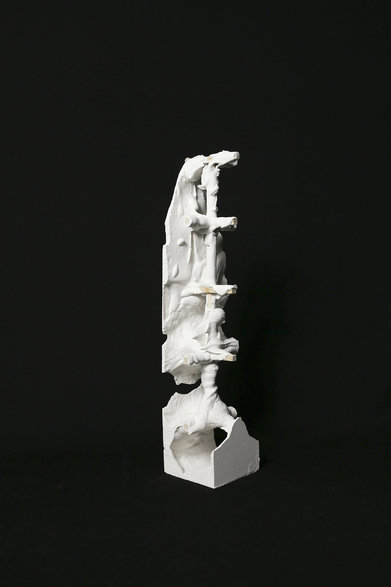
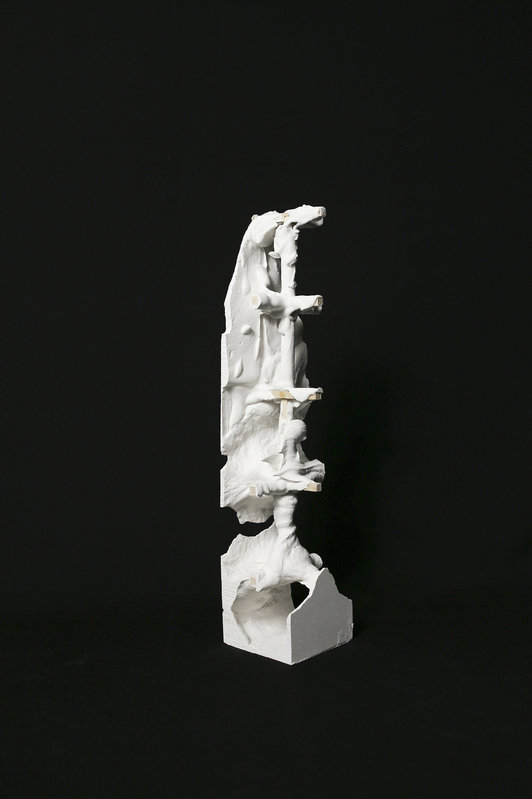

A pair of material explorations
An exercise from Core II: The Library as Third Space. Check out the final studio project here.
An initial focus of the studio was on material assembly and how the baseline properties of our materials affect how we begin to put them together. Intrigued by the idea of experimenting with a fixed grid and how I could create freedom within constraints, I conducted two material experiments: an object made of a series of various sizes of door hinges (attached to each other with bolts) and an object made of wood and plaster of paris.

Despite the static nature of the material itself, the resulting object was able to create informal, loose spaces from a very formal arrangement of material. The following drawing begins to capture that looseness.
The second object was created by assembling a grid structure from wooden dowels, and then pouring plaster of paris into the dowels and shaking the mold to create irregularities that latched onto the grid. The object was then cut on the bandsaw, and I began to rearrange the pieces to create new landscapes and enclosures. Again, there is a looseness to one material, and a rigidity to the other.


 
